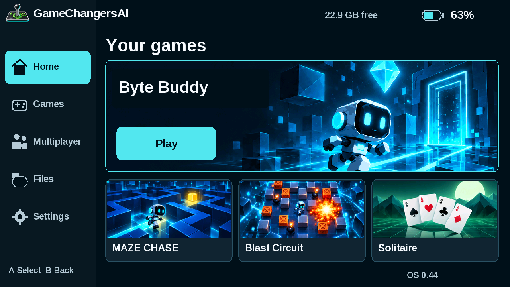

Actual native C renderer · 1280 × 720
These screens come from the same C interface compiled into the Tab5 firmware. Use the selector to inspect each screen. This gallery displays rendered frames; the controls inside the images are operated on the console.
